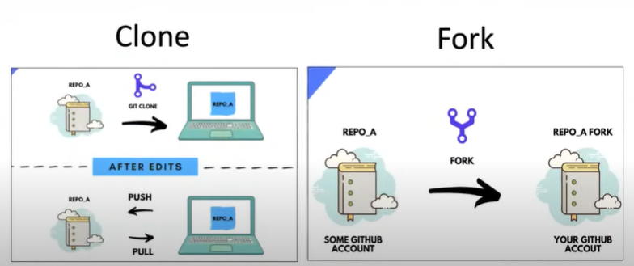

GitHub.(Cloud/Server-side)
Fork.(Desktop/OS/Local/Client-side)
Computer/Desktop
Data move from (fork to github)
GitHub/CLouds
Data fetch from (github to fork)
Data pull/fetch from github to fork !
Data push/move to github from fork !
Commit OR Saved our data in terms of (Remotely / Localy) !
Branches could be different:
For Personal, use to build our projects...
For Teacher, use to for (FYP) to show our projects with our Supervsor...
Those files which are not use !
OR Like, images, videos that not want to push in my github...\So, ignore those files
When we change specfic file on GITHUB. But at same thing occurs from other side, anyone who access the same file and changes it on same line of code,
Thats point is,\(Merge OR Git) Conflict Occure !
Cloning is that, import the files or full folder of those who gives the link of his Repositery to you
import files
Forking is that, I could be import any Repositery which is public, to our GitHub-Account-(ID)...
Which Benefit is that any changes occure from other side will notify me.

THE END